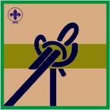

3º Etapa - Pionero(a)

En esta etapa él(la) joven mejora su dominio de las técnicas aprendidas. Conoce otras que le permitirán disfrutar plenamente la vida al aire libre, al tiempo que desarrolla el sentido de liderazgo y su habilidad en la toma de decisiones.
Tiempo estimado de la etapa es de 16 meses y pasa a convertirse en Pionero(a)
En esta etapa el o la scout deberá dominar los requisitos básicos de las ocho (8) pruebas incluidas, los cuales son obligatorios.
Además contará con una serie de pruebas opcionales de libre escogencia, de las cuales debe seleccionar dos (2) y cumplir con los requisitos de las pruebas en la cual quiera especializarse.
Para acceder a la información necesaria, puede pulsar sobre el Titulo de cada tema, o usar el item Temas del Plan de Adelanto ubicado en el Menú.
Básico
- Realizar los siguientes nudos y conocer su aplicación: Presilla
de alondra, Fugitivo, Pescador, Margarita, Arrastre, Cosechero, Silla
de bombero, Eslinga de andamio y de barril, refuerzo de cabo.
Opcional
- Diseña y elabora alguna de las siguientes construcciones: a)
Torre de observación (mínimo cuatro metros). b) Puente mono (mínimo
ocho metros). c) Puente vara (mínimo diez metros). d) Teleférico (con
caída mínima 15 metros). e) Cabaña en un árbol. f) Balsa para toda la
Patrulla.
Básico
- Elaborar fuego de Polinesio, Consejo y Reflector
- Preparar alguno de estos platos de comida primitiva: a) Pan de
cazador. b) Kabob. c) Arroz al bambú. d) Papa o Plátano asado. e) Carne
a la piedra. f) Carne a la naranja u otros. g) Prepara una comida en
campamento en un horno hecho por ti.
Opcional
- Elaborar carbón.
- Participar en un curso de cocina.
- Prepara en campamento una comida completa típica de tu región.
- Preparar en campamento, alguno de los siguientes platos: a)
Pabellón con baranda. b) Pasticho. c) Torta. d) Arroz con leche. e)
Albóndigas.
Básico
- Utilizar y mantener el hacha de leñador, poleas, chicoras, cuerdas, mecates, lámparas de gas, kerosén, gasolina o alcohol.
- Reparar algún equipo de tu Patrulla que este en mal estado.
Opcional
- Realizar dos de las siguientes opciones: a) Confeccionar una
carpa. b) Confeccionar un morral. c) Confeccionar un toldo. d)
Confeccionar un saco de dormir.
- Organizar una actividad con tu Patrulla para recoger fondos destinados a mejorar el equipo.
Básico
- Poder orientarse por medios naturales.
- Interpretar un mapa con curvas de nivel, distancias y signos topográficos.
- Prepara y realiza junto con otra persona, preferente otro Scout,
una excursión con pernocta asesorado por tu jefe de Tropa. Tomando las
medidas de seguridad apropiadas que garanticen tu integridad personal.
Expón los resultados a tu Patrulla o Tropa.
Opcionales
- Practicar alguna de las siguientes actividades: a) Escalada en
roca. b) Montañismo. c) Andinismo. d) Submarinismo. e) Canotaje. f)
Espeleología. g) Manejo de embarcaciones fluviales y marítimas. h)
Deportes de playa (Surf, Windsurf, Body board, Snee board).
- Realizar uno de los siguientes cursos: a) Ofidiología. b)
Ornitología. c) Zoología. d) Botánica. e) Rapel f) Cocina de Campamento.
Básico
- Identificar los diferentes tipos de fracturas y saber que hacer en cada caso.
- Conocer los diferentes métodos para el traslado de heridos.
- Saber socorrer a una persona con mordedura de serpiente o animales rabiosos.
- Saber tratar picaduras de animales ponzoñosos.
- Conocer las técnicas para atender los casos de asfixia mecánica y saber aplicar respiración boca a boca.
- Saber como actuar en caso de ataque de epilepsia, ataque al corazón y crisis nerviosa.
Opcionales
- Realizar los siguientes cursos dictados por instituciones especializadas: a) Primeros auxilios. b) Rescate y salvamento. .
Básico
- Transmitir y recibir quince palabras por minuto en semáforo.
- Conocer el abecedario y los signos convencionales para transmitir
Morse y estar en capacidad de transmitir y recibir 10 palabras por
minuto.
- Construir un aparato de transmisión en Morse.
Opcionales
- Conocer y poder comunicarse va través de una de estas opciones:
a) Internet. b) Radios de transmisión 11 metros, 2 metros o 40 metros.
c) Uso de medios audiovisuales. d) Sistema Braile. e) Sistema de
comunicación para sordomudos. f) Escribir, leer y hablar otro idioma.
g) Mantener correspondencia escrita constante con un Scout de otro país.
Básico
- Organizar y realizar, con apoyo de alguna institución o un
sinodal, una exposición sobre el uso indebido de drogas o sobre el
SIDA, en tu grupo Scout, colegio o comunidad.
- Conocer “Los derechos de los niños, niñas y jóvenes” y poder verbalizarlos indicando su alcance.
- Discutir con tu Patrulla y algún adulto de tu confianza sobre,
como actuar en caso de propuestas inadecuadas por parte de otras
personas.
Opcionales
- Participar en campañas dirigidas por alguna institución pública
donde actúe en función de la causa social que según su opinión merezca
su esfuerzo y trabajo.
- Dominar lo básico de alguna técnica de defensa personal.
- Realizar el programa de Salvamento en la playa.
Espiritualidad
Básico
- Practicar la Ley y la Promesa Scout en tu vida diaria.
- Planifica y participa en un servicio de dos días, que puede ser en tu colegio, comunidad y local de grupo.
- Practicar la buena acción diaria.
Opcional
- Preparar una discusión de Promesa y Ley con tu Patrulla, puedes
invitar a otras personas que puedan aportar a la discusión (Scout o no).